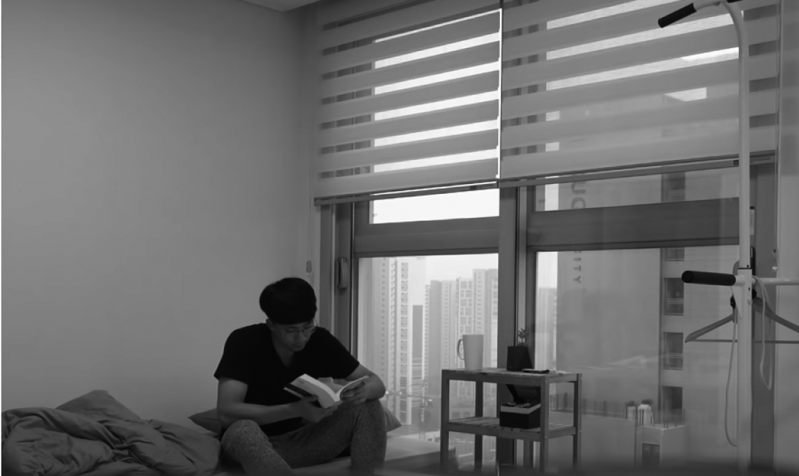

우리나라 성인 평균 독서량을 일주일 만에
독서가 삶을 얼마나 긍정적으로 바꿔줄 수 있는지는 말해봐야 입이 아플 정도다. 그래서 우리나라 성인의 1년 평균 독서량이 얼마냐면, 무려…… 여섯 권이다. 2019년에 조사한 내용이니 지금은 더 떨어졌을지도 모르겠다. 게다가 성인 중 1년에 책을 한 권이라도 읽는 사람은 열 명 중 불과 네 명뿐이라니, 독서 실태가 얼마나 심각한 수준인지 알 만하다(그래도 이 책을 읽는 분들은 적어도 한 권은 읽은 셈이다).
나라고 다르지 않았다. 매년 새해 목표로 ‘독서 몇 권 하기’를 다짐하지만 지금까지 한 번도 달성한 적이 없었고, 스스로 독서량이 부족한 걸 잘 알고 있었다. 독서에 딸려오는 장점도 잘 알고 경험해본 적도 있으면서 왜 책만 읽으려고 하면 잠이 오는지. 심지어 이 도전을 한 해에는 25권을 읽겠다고 리스트까지 작성했는데 3개월 동안 읽은 책은 무려…… 0권이었다.
유튜브를 시작한 지 1년쯤 되어 구독자 수가 600명 정도일 때, 구독자들에게 어떤 도전을 하면 좋을지 추천을 받았다. 그때 다섯 명이 공통적으로 ‘1일 1독 챌린지’를 추천해주셨다.
독서와 거리가 먼 나의 삶을 반성하고 책과 친해져보고자 이 제안을 받아들였고 곧바로 일주일 1일 1독에 돌입했다. 사놓고 읽지 않은 책 몇 권을 꺼냈고 학교 도서관에서도 관심 있는 책들을 빌렸다. 폭넓은 독서를 하기 위해 소설, 경제, 재테크, 자기계발서, 전공 서적 등 분야는 다양하게 구성했다.
매일 한 권을 읽는다는 게 부담이었지만, 나의 한계를 넘어보는 새로운 도전이었기에 설레기도 했다. 무조건 하루에 한 권은 다 읽고 자겠다고 다짐하며 도전이 시작되었다.
✔ 목표: 일주일 동안 하루에 한 권씩 책을 읽는다.

단기간에 몰입해 진입 장벽을 허물다
1일 1독의 시작을 알린 책은 《마흔에 읽는 손자병법》이었다. 예전부터 읽어보고 싶었는데 어렵다는 이유로 시도를 못 했었다. 첫 책으로는 조금 버거우려나 싶었지만 일단 뽑아 들었으니 어떻게든 읽기로 했다.
출근하는 버스에 앉아 첫 장을 펼쳤다. 회사까지는 30분 남짓 걸리는 시간이라 집중해서 책을 읽기에 충분했다. 점심 식사 후에는 자리로 돌아와 책을 읽었다. 졸음이 쏟아졌지만 하루 만에 이 두꺼운 책을 읽으려면 모든 짬을 다 써야 했다. 퇴근길 지하철에서도, 집에 도착해서도 책만 읽었다. 그리고…… 잠들어버렸다.
깨어보니 밤 11시였다. 아직 3분의 1이나 남아서 서둘러야 했다. 그래도 잠깐 잔 덕분에 정신이 맑아져 집중해서 나머지를 읽어 내려갔다. 마지막 장을 덮고 시계를 보니 새벽 2시 21분. 그렇게 도전 첫 책이자 올해 첫 책을 끝냈다.
DAY 1
《마흔에 읽는 손자병법》(강상구, 흐름출판, 2011)
- 새벽 2시 21분에 독서 완료.
두 번째로 읽을 책은 재테크서 《4개의 통장》 . 어김없이 출근길과 점심시간에 책을 읽었다(그리고 어김없이 졸음이 쏟아졌다). 귀가하는 지하철에서도, 집에 도착해서도 독서를 했다. 첫날 큰 산을 넘어서인지 두 번째 책은 아주 수월하게 읽었다. 사회 초년생이 읽으면 좋을 재테크서라 이해하기 어려운 내용도 없었다.
연초에 세웠던 한 달에 최소 두 권은 읽자는 목표는 이틀 만에 달성했다. 마음만 먹으면 하루에 한 권씩도 읽을 수 있는데, 왜 그동안 책 읽을 생각조차 하지 않았을까. 어쩐지 조금 머쓱해졌다. 이틀 연속 책을 해치워 버리니 독서에 대한 부담감이 점점 줄어들었다.
DAY 2
《4개의 통장》(고경호, 다산북스, )
- 이틀 연속 완독.
세 번째 책은 소설집 《오직 두 사람》 을 골랐다. 단편 소설집이라 빠르게 몰입했고 읽는 속도도 더 붙었다. 저녁을 준비하며 밥이 되는 동안에도, 저녁에 팩을 하면서도 책을 읽었다. 그렇게 살면서 처음으로 3일 연속 완독하는 기적을 맛보았다.
DAY 3
《오직 두 사람》(김영하, 문학동네, 2017)
- 3일 연속 완독 성공!
4일째, 고비가 찾아왔다. 평소 광고에 관심이 많았기에 전공서지만 재밌을 것 같아 《광고기획론》을 선택했다. 이날은 출근하지 않는 날이어서 지난 3일보다 여유롭게 천천히 책을 읽어나갔다. 틈틈이 영상 편집도 하고 평화로운 시간을 보내고 있는데 저녁에 친구에게 같이 저녁이나 먹자며 연락이 왔다. 그 정도는 괜찮겠지 싶어 읽던 책을 챙겨 약속 장소로 나갔다.
그러나 결국 술자리로 이어진 만남 때문에 책은 더 이상 읽지 못한 채 잠들었다. 하루에 한 권을 다 읽지 못한 것은 물론 평소보다 시간적 여유가 많았는데도 목표를 달성하지 못해 너무 아쉬웠다. 3일 동안 잘 해왔기 때문에 그 아쉬움은 몇 배나 컸다. 그래도 책과 조금씩 친해지고 있는 내 모습에 위안 삼으며 5일 차에는 어제 읽지 못한 《광고기획론》을 마저 읽었다.
DAY 4, 5
《광고기획론》(신강균, 한경사, 2017)
- 이틀에 걸쳐 독서 완료.
시간적 여유가 많았는데도 1일 1독을 하지 못해 아쉬움이 크다.
토요일인 6일 차, 다섯 번째 책으로는 경제경영서를 읽기로 했다. 이날도 출근을 하지 않았는데, 이상하게 출근하는 날보다 책 읽는 속도가 더 더뎠다. 저녁이 되어서까지 고작 100페이지도 채우지 못했다. 핑계를 대자면 느지막이 일어나 낮에 책을 읽으려고 책상 앞에 앉았다가 카톡이 와서 휴대폰을 들었고, 자연스럽게 책은 무릎에 올려둔 채 인스타그램, 유튜브, 넷플릭스를 탐험한 게 이유였다.
정신을 차려보니 시간이 훌쩍 지났고 다시 자세를 바로 하고 앉았지만, 저녁을 먹고 씻으니 이미 하루가 끝나가고 있었다. 집에 있을 때는 핸드폰에 빼앗기는 시간이 너무 많았다. 책을 읽는 것보다 핸드폰을 멀리하는 게 훨씬 더 어려웠다. 콘텐츠가 차고 넘쳐 너무 볼 게 많으니 항상 핸드폰에 손이 가는 것 같았다.
DAY 6
《한 권으로 정리하는 4차 산업혁명》(최진기, 이지퍼블리싱, 2018)
- 독서 중.
유난히 읽는 속도가 붙지 않는 하루였다.
7일 차, 핸드폰과 잠시 이별하고 일요일 하루를 독서로 가득 채워보기로 했다. 그야말로 아침부터 ‘폭풍 독서’를 했다. 웃기게도 내가 책을 읽는 동안 핸드폰 알람은 단 하나도 오지 않았다. 그러니까 그동안 불필요하게 습관적으로 핸드폰을 만지작거린 것이다(습관적으로 책을 만지작거리면 얼마나 좋았을까).
핸드폰을 멀리한 덕분에 금세 《한 권으로 정리하는 4차 산업혁명》을 끝냈다. 잠시 쉬다가 오후부터는 여섯 번째 책인 《장하준의 경제학 강의》를 읽었다. 구매한 지는 오래되었지만 내용이 쉽지 않아서 항상 중간에 포기했다. 지금 아니면 평생 못 읽을 수도 있겠다는 생각에 본격적으로 밑줄까지 쳐가며 읽었다. 이해가 되면 되는 대로, 안 되면 안 되는 대로 부담 없이 읽어나가니 숙원 사업처럼 느껴지던 이 책도 끝낼 수 있었다.
DAY 7
《장하준의 경제학 강의》(장하준, 부키, 2014)
- 《한 권으로 정리하는 4차 산업혁명》 독서 완료.
- 이어서 《장하준의 경제학 강의》까지 총 두 권 독서 완료.
8일 차, 마지막으로는 머리를 식힐 겸 고전소설을 골랐다. 역시나 전날 어려운 책을 읽어서 그런지 아주 술술 읽혔다. 누가 보면 평소에 책을 즐겨보는 사람처럼 편안하고 가볍게 속도가 붙었다. 어릴 적 부모님 서재에 투박하게 꽂혀 있는 것을 보고 그대로 넘겼던 《오만과 편견》도 몇십 년이 지나서야 끝을 맺었다.
DAY 8
《오만과 편견1, 2》(제인 오스틴, 김유미 역, 더클래식, 2019)
- 독서 완료.
- 8일 동안 총 일곱 권 완독.
8일 만에 일곱 권, 1일 0.875독이지만, 아마 내 인생에 다시 없을 대기록이 될 것 같다. 1년에 25권을 읽겠다는 목표도 일주일 만에 3분의 1이나 달성했다. 책을 읽느라 다른 일에는 소홀했기 때문에 조금 무리했나 싶으면서도 일주일쯤은 충분히 해볼 만한 도전이었다 싶다.

자투리 시간으로 내 삶에 투자하는 방법
그동안 마음속에 이 책 저 책 점찍어 두기만 하고 읽지 않다 보니 독서에 대한 부담감이 컸다. 하지만 이렇게 잠시나마 책에 빠져 읽는 일에 익숙해지자 어떤 책이든 쉽게 읽을 수 있을 것 같았다. 물론 단 일주일의 도전으로 독서 습관이 완전히 자리 잡혔다든가 삶이 180도 달라진다든가 하는 기적 같은 일은 일어나지 않았다. 중요한 건 독서에 완전히 몰입해본 경험이고 이로 인해 독서와 나 사이에 높게 쌓여 있던 장벽을 조금이나마 허물게 되었다는 사실이다. 독서뿐만이 아니다. 지금까지 어느 도전이든 온 신경을 집중해 몰입하다 보면 어느새 이전과는 달리 질적으로 성장한 나를 느낄 수 있었다.

지금까지 어느 도전이든 온 신경을 집중해 몰입하다 보면
어느새 이전과는 달리 질적으로 성장한 나를 느낄 수 있었다.
아직 책과 연애하는 수준까진 아니지만, 이번 도전으로 썸을 타는 정도까지는 발전하지 않았나 싶다. 서점이 보이면 괜히 들어가고 싶고, 생각이 없다가도 책을 훑어보다 보면 꼭 한 권 정도는 손에 쥐고 나오게 된다. 오랜 시간 자취를 하다 보니 공간 문제로 방에 책을 많이 두지 않았는데, 지금은 선반 위에 꽤 많은 책이 쌓였다(비록 다 읽지 못한 책이 많지만). 또 가벼운 에세이를 전자책으로 구매해 핸드폰으로 틈틈이 가벼운 에세이도 읽으면서 연간 독서 목표를 50권으로 상향 조정해 열심히 마음의 양식을 쌓고 있다.
얼마 전 뉴스에서 흥미로운 연구 결과를 보게 되었다. 사람들이 자주 하는 취미 활동 중 스트레스 해소에 가장 도움이 되는 활동이 독서라는 것이다. 영국 서섹스대학교 연구팀에 따르면 하루에 6분 독서하면 스트레스가 68퍼센트 줄어들고 심박수가 낮아져 긴장감이 완화된다고 한다. 그다음으로 효과적인 활동은 음악 감상, 커피 마시기로 나타났다. 그러니까 음악을 켜놓고 커피를 마시며 독서를 하면 스트레스가 현저하게 줄어들 수 있다는 말이다. 독서로 스트레스도 줄고, 자기계발도 하고, 나아가 인생까지 바뀔 수 있다면 안 할 이유가 없지 않을까?
이제 나는 책을 읽는 것을 넘어 책을 쓰는 경지에까지 이르렀다. 아무리 생각해도 도전하길 잘했다는 생각이 든다. 이 도전을 추천해주신 다섯 명의 구독자분들께 다시 한 번 감사드린다.
그동안 책과 친하지 않았다면 과감하게 1일 1독에 도전해보면 어떨까? 시작은 가벼운 에세이나 소설로 시작해보자. 나는 하필 《마흔에 읽는 손자병법》을 첫 책으로 골라 첫날부터 고생했지만, 두께나 내용 면에서 가벼운 책으로 접근했더라면 더욱 빠르게 독서에 빠질 수 있었을 것 같다. 또 서점에서 소중히 모셔왔지만, 책장에서 첫 챕터도 끝내지 못한 채 방치된 책이 있다면 다시 손길을 내밀어 그 책에게 진가를 발휘할 기회를 주자.
흔히 독서는 가장 적은 노력을 투입해서 가장 많은 이익을 낼 수 있는 최고의 투자라고 한다. 쉽게 말해 가성비가 훌륭한 취미 활동인 셈이다. 일주일, 아니 하루만이라도 휴대폰을 멀리하고 독서에 투자해 몰입의 즐거움과 동시에 삶의 지혜를 쌓아 나가보자.